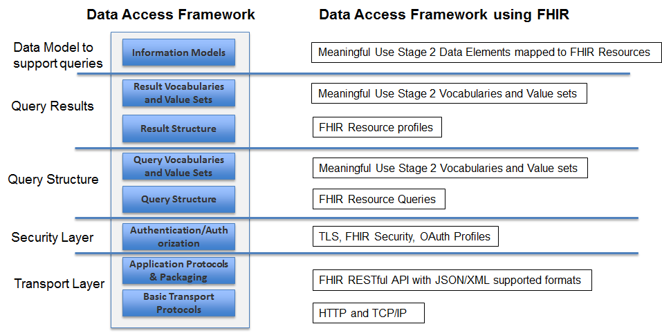

Current Build

The nation is reaching a critical mass of HealthIT systems (EHRs, Data Warehouses etc) that comply with data and vocabulary standards including Meaningful Use Stage 2 (MU2) standards. The wide deployment of Meaningful Use Stage 2 compliant HealthIT systems has created unique opportunities for providers, provider support teams, healthcare professionals and organizations, etc. to access and use the patient data that is already collected during clinical workflows.
The deployed Health IT systems provide many access paths through their pre-defined interactions between a user and the system. However, they are limited in their support for data queries, APIs, or services to access data sets as needed. Where Health IT systems provide data access, they likely do not use industry standard access methods. Increasing support for this class of data access, using industry standards, would enable other applications to expand the ability of users to create value out of their data without having to rely on the predefined access paths.
Allowing access to this data can enable a provider to further analyze the collected data to understand a patient's overall health, the health of a provider's collective patient population, and use the data to power innovative new applications and tools to take better care of patients and populations.
The Data Access Framework (DAF) Initiative tries to leverage the HL7 FHIR, C-CDA and existing IHE standards to standardize access to Meaningful Use Stage 2 structured information both within the organization and from external organizations. DAF uses existing IHE profiles (XCA, MHD v2) to standardize access to documents such as a CCD, History and Physical Note etc. while HL7 FHIR is leveraged to access granular information such as problem lists, medications and patient demographics.
The standards and guidance incorporated into this implementation guide were based on the requirements defined in the DAF Use Cases document. Users of this implementation guide will benefit greatly from review of both the Local and Targeted DAF Use Cases. A very high level overview of the DAF actors and their interactions are as shown below:
The actors and their definitions are as follows:
The Data Access Framework Initiative identifies and recommends standards for the interoperable representation and transmission of the following using the notion of a Query Stack which modularizes the various layers of the Data Access Framework. The DAF Query Stack using FHIR is as shown in the diagram below.
The DAF FHIR Implementation Guide will provide requirements and implementation guidance for the various layers of the DAF Query Stack which includes:
This implementation guide provides guidance on the use of FHIR profile(s) for DAF. The profiles in this implementation guide will be used to meet the following DAF project objectives:
This implementation guide provides implementers with guidance on how to achieve conformance with the standards recommended by the Office of the National Coordinator for Health Information Technology (ONC) Standards & Interoperability (S&I) Framework, DAF Initiative.
The implementation guide will explain how the FHIR resources (using the defined profiles) can be used to enable data access within and across enterprises. Additionally, it describes secure interactions using Representational State Transfer (REST) services to access the desired resources.
The DAF profiles identify the resource elements and extensions that must be supported to meet DAF use cases and constraints on their use.
Out of scope for this implementation guide:
© HL7.org 2011+. FHIR DSTU (v0.5.0-5997) generated on Mon, Jul 27, 2015 18:52-0400.
Links: What's a DSTU? |
Version History |
Table of Contents |
Compare to DSTU |
 |
Propose a change
|
Propose a change